건설기계설비산업기사 (2017-08-26 기출문제)
1과목: 기계제작법
1. 강철을 암모니아 가스와 같이 질소를 함유한 물질 속에서 가열하여 질소 화합물을 만들어 표면을 경화하는 방법은?
- 침탄법
- 청화법
- 질화법
- 화염경화법
(정답률: 60%)

2. 연삭 작업에서 로딩(눈메움)의 원인이 아닌 것은?
- 숫돌입자가 너무 작다.
- 숫돌의 결합도가 높다.
- 조직이 너무 치밀하다.
- 숫돌바퀴의 원주속도가 너무 빠르다.
(정답률: 25%)
3. 직류아크 용접기를 사용하여 용접할 때 모재를(+)극에 연결하고 용접봉을 (-)극을 연결한 극성은?
- 역극성
- 정극성
- 용극성
- 비용극성
(정답률: 37%)
4. 다음 중 목형용 목재의 구비조건이 아닌 것은?
- 변형이 잘 되어야 한다.
- 내구력이 강해야 한다.
- 재질이 균일하여야 한다.
- 가공이 용이하여야 한다.
(정답률: 47%)
5. 일반적으로 호칭치수가 작을 때 사용하고, 통과측과 정지측으로 이루어진 구멍용 한계 게이지는?
- 링 게이지
- 스냅게이지
- 실린더 게이지
- 플러그 게이지
(정답률: 34%)
6. 지그와 고정구의 일반적인 특징에 대한 설명으로 옳지 않은 것은?
- 제품의 정밀도를 높여 호환성이 향상된다.
- 작업자의 피로 및 안전사고가 증가된다.
- 재료의 낭비가 적고 불량품이 감소한다.
- 검사의 일부를 생략할 수 있다.
(정답률: 45%)
7. 다음 중 정밀입자 가공의 종류로 옮지 않은 것은?
- 래핑
- 호닝
- 슈퍼 피니싱
- 숏피닝
(정답률: 36%)
8. 절삭공구의 수명(T)은 150분, 초경합금공구의 지수(n)는 0.25, 공구수명의 상수(C)는 350일 때 테일러(Taylor) 공구 수명식을 이용하여 계산하면 절삭속도는 약 몇 m/min인가?
- 80
- 100
- 120
- 140
(정답률: 34%)
9. 드릴 가공 후 구멍을 정밀하게 가공하기 위해 사용하는 공구는?
- 탭
- 리머
- 카운터 싱크
- 카운터 보어
(정답률: 36%)
10. NC공작기계에서 휴지(dwell)시간을 지정할 때 사용하는 어드레스가 아닌 것은?
- P
- Q
- U
- X
(정답률: 12%)
11. 선반에서 공작물의 형상이 불규칙하여 척을 사용할 수 없는 경우나 대형의 공작물일 경우 공작물을 고정하는 데 사용하는 부속장치는?
- 센터(Center)
- 면판(Face plate)
- 심봉(Mendrel)
- 방진구(Work rest)
(정답률: 30%)
12. 다음 강의 담금질 조직 중에서 경도가 제일 큰 것은?
- 트루스타이트
- 오스테나이트
- 마텐자이트
- 소르바이트
(정답률: 50%)
13. 인발 작업에서 지름 10mm의 강선을 지름 5mm로 만들었을 때 단면 감소율은 몇 %인가?
- 75
- 50
- 40
- 25
(정답률: 24%)
14. 평면 또는 원통면을 더욱 정밀하게 손다듬질할 때 사용하는 공구는?
- 정
- 다이스
- 파이프렌치
- 스크레이퍼
(정답률: 54%)
15. 드릴의 홈을 따라서 만들어진 좁은 날로 드릴을 안내하는 역할을 하는 것은?
- 탱
- 웨브
- 마진
- 생크
(정답률: 34%)
16. 일반적으로 주물사가 갖추어야 할 조건이 아닌 것은?
- 용해성이 좋을 것
- 통기성이 좋을 것
- 보온성이 좋을 것
- 내화성이 클 것
(정답률: 20%)
17. 공작물에 숫돌을 낮은 압력으로 누르고, 숫돌의 이송운동으로 공작물의 표면을 다듬는 가공법은?
- 호닝
- 슈퍼 피시닝
- 래핑
- 버핑
(정답률: 34%)
18. 입상의 미세한 용제를 용접무에 산포하고, 전극 와이어를 연속적으로 공급하여 발생된 아크에 의해 용접되는 방식은?
- 테르밋 용접
- 스터드 용접
- 서브머지드 용접
- 플라즈마 용접
(정답률: 36%)
19. 소성가공 시 압출용기(Container)를 이용하는 가공방법으로 알루미늄, 아연, 구리, 마그네슘 등의 합금으로 각종 단면재, 관재를 성형하여 제작하는 가공법은?
- 압출가공
- 인발가공
- 압연가공
- 판금가공
(정답률: 54%)
20. 다음 중 절삭 유제를 사용하는 목적이 아닌 것은?
- 절삭저항이 커져 공구수명이 길어진다.
- 냉각작용와 윤활작용을 한다.
- 공구 날의 경도저하를 방지한다.
- 온도를 저하시켜 열팽장을 방지한다.
(정답률: 40%)
2과목: 재료역학
21. 평면응력 해석에서 주응력에 대한 설명으로 옮은 것은?
- 임의 요소에서 전단응력이 0인 단면에 발생하는 최대, 최소의 수직응력
- 임의 요소에서 인장응력과 압축응력이 같을 때의 응력
- 축 방향과 40°경사진 단면에 작용하는 수직응력
- 임의 요소에서 전단응력이 최대인 단면에서의 수직응력
(정답률: 38%)
22. 온도차를 △t, 선팽창계수를 a, 재료의 탄성계수를 E, 전단 탄성계수를 G, 길이를 l이라 할 때 열응력(q)을 나타낸 식은?
- q=a△t
- q=al△t
- q=Ga△t
- q=Ea△t
(정답률: 62%)
23. 단면적이 20m인 균일 단면봉이 압축 하중 P=5000N을 받고 있다. 이 봉의 하중 축에 45°경사진 단면에서의 압축 응력 σn은 몇 MPa인가?
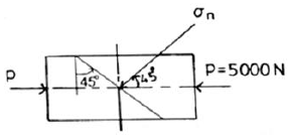
- 1.25
- 1.76
- 2.50
- 3.53
(정답률: 48%)
24. 그림과 같은 2축 응력상태에서 σ=45MPa이 작용할 때 그 재료 내에 생기는 최대 전단 응력의 크기는 몇 MPa인가?
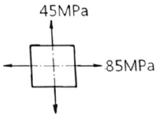
- 10
- 20
- 30
- 40
(정답률: 60%)
25. 다음 횡 탄성계수(전단 탄성계수)에 대한 식으로 옳은 것은?
- 전단응력/수직응력
- 수직응력/수직변형률
- 전단응력/전단변형률
- 전단변형률/전단응력
(정답률: 69%)
26. 단면이 정사각형인 보에 2kN·m의 굽힘모멘트가 작용하여 생긴 응력이 40MPa일 때 보의 단면에서 한 변의 길이가 약 몇mm인가?
- 28
- 45
- 52
- 67
(정답률: 63%)
27. 그림과 같은 폭 4cm, 높이 5cm인 직사각형 단면의 외팔보에 생기는 최대 전단응력은 몇 MPa인가?
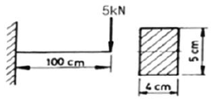
- 0.48
- 1.25
- 2.45
- 3.75
(정답률: 62%)
28. 길이가 50cm, 단면적이 5cm2인 강봉이 인장하중을 받고 1.0mm신장되었다. 이 봉에 저장된 탄성에너지는 몇 J 인가? (단, 재료의 탄성계수 E=2⑤GPa이다.)
- 0.102
- 1.025
- 10.25
- 102.5
(정답률: 38%)
29. 그림과 같은 봉재의 단면적이 1.5cm2인 균일 단면의 황동봉이 P=10kN, Q=5kN의 하중을 받을 때 이 봉의 전 신장량을 구하면 몇 cm인가? (단, 탄성계수는 90GPa이고, ℓ1=ℓ2=20cm이다.)
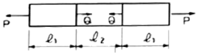
- 0.037
- 0.0037
- 0.042
- 0.0042
(정답률: 50%)
30. 다음과 같은 외팔보의 자유단에 집중 하중 P가 작용하고 있다. 보의 자유단의 처짐량은 얼마인가? (단, E는 탄성계수, I는 단면 2차모멘트이다.)
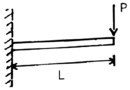
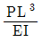
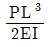
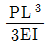
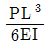
(정답률: 50%)
31. 그림과 같이 세 힘이 한 곳에 작용할 때의 평형조건은?
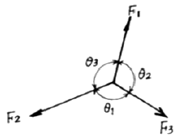
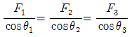
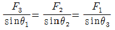
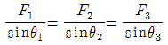
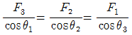
(정답률: 50%)
32. 비례한도에 대한 설명으로 옳은 것은?
- 응력과 변형률이 비례하는 최대응력
- 응력의 발생으로 변형을 일으켜 파괴하는 한계
- 인장시험에 있어서 부하를 거는 최대 하중점
- 응력의 증가에 대하여 변형이 갑가지 증가하는 한계점
(정답률: 30%)
33. 양단이 핀으로 지지된 길이 2m의 연강 기둥이 압축력을 받고 있다. 이 기둥의 죄굴하중은 약 몇kN인가?
- 82
- 330
- 674
- 1307
(정답률: 25%)
34. 길이 5m의 연강봉이 허용할 수 있는 최대 축하중을 받아 2mm의 신장을 하였다. 연강봉의 인장강도가 490MPa이라 할 때 안전율은? (단, E=200GPa이다.)
- 3.125
- 4.125
- 5.125
- 6.125
(정답률: 34%)
35. 바깥지름 2d, 안지름 d인 중공축을 지름이 d인 중실축으로 대체하면 전달할 수 있는 비틀림 모멘트는 몇 % 감소하는가?
- 84.7
- 86.7
- 88.7
- 90.7
(정답률: 54%)
36. 다음과 같은 단면 중 단면계수가 가장 큰 것은?
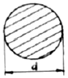
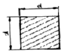
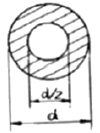
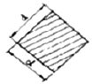
(정답률: 37%)
37. 그림과 같은 길이 2m인 단순보가 3kN/m의 균일분포하중을 받고 있을 때, 보 중앙에서 의 굽힘 모멘트는 몇 N·m인가?
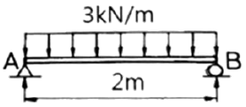
- 1500
- 2000
- 3000
- 6000
(정답률: 40%)
38. 전단력 선도와 굽힘모멘트 선도의 변화 상태에 대한 설명으로 옳은 것은?
- 전단력이 선형적으로 증가할 때 굽힘모멘트는 0이 된다.
- 전단력이 선형적으로 감소할 때 굽힘모멘트는 일정하게 된다.
- 전단력이 0일 때 굽힘모멘트는 2차 곡선적으로 증가한다.
- 전단력이 양(+)의 방향으로 일정할 때 굽힘모멘트는 선형적으로 증가한다.
(정답률: 50%)
39. 그림과 같은 단순보에서 집중하중(P) 40kN과 균일분포하중(w) 14kN/m이 작용하고 있다. 이 때 A와 B점의 반력 Ra, Rb는 각각 몇 kN인가?
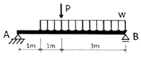
- Ra=46.4, Rb=49.6
- Ra=35.2, Rb=60.8
- Ra=49.6, Rb=46.4
- Ra=60.8, Rb=35.2
(정답률: 23%)
40. 축의 전달동력 P[kW], 회전수 N[rpm], 허용비틀림응력τa [MPa]이라 할 때, 축의 지름 d[cm]를 구하는 식은??
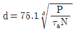
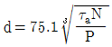
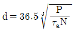
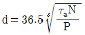
(정답률: 29%)
3과목: 기계설계 및 기계재료
41. 탄소함유량이 양 0.85%C~2.0%C에 해당하는 강은?
- 공석강
- 아공석강
- 과공석강
- 공정주철
(정답률: 42%)
42. 항공기 재료에 많이 사용되는 두랄루민의 강화기구는?
- 용질경화
- 시효경화
- 가공경화
- 마텐자이트 변태
(정답률: 38%)
43. 노 내에서 Fe-Si, Al 등의 강력한 탈산제를 첨가하여 완전히 탈산시킨 강은?
- 킬드강(killed steel)
- 림드강(rimmed steel)
- 세미킬드강(semi-killed steel)
- 세미림드강(semi-rimmed steel)
(정답률: 53%)
44. 열가소성 재료의 유동성을 측정하는 시험방법은?
- 로크웰 시험법
- 브리넬 시험법
- 멜트 인덱스법
- 샤르피 시험법
(정답률: 27%)
45. 담금질한 후 치수의 변형 등이 없도록 심냉처리 해야 하는 강은?
- 실루민
- 문쯔메탈
- 두랄루민
- 게이지강
(정답률: 43%)
46. 금속의 결정 구조 중 체심입방격자(BCC)인 것은?
- Ni
- Cu
- Al
- Mo
(정답률: 45%)
47. 강의 표면에 Al을 침투시키는 표면 경화법은?
- 크로마이징
- 칼로라이징
- 실리콘나이징
- 보로나이징
(정답률: 50%)
48. 진동에너지를 흡수하는 능력이 우수하여 공작기계의 베드 등에 가장 적합한 재료는?
- 회주철
- 저탄소강
- 고속도공구강
- 18-8스테인리스강
(정답률: 43%)
49. 비정질 합금에 관한 설명으로 틀린 것은?
- 전기 저항이 크다.
- 구조적으로 장거리의 규칙성이 있다.
- 가공경화 현상이 나타나지 않는다.
- 균질한 재료이며, 결정 이방성이 없다.
(정답률: 17%)
50. 아연을 소량 첨가한 황동으로 빛깔이 금색에 가까워 모조금으로 사용되는 것은?
- 톰백(tombac)
- 델타 메탈(delta metal)
- 하드 블라스(hard brass)
- 문쯔 메탈(muntz metal)
(정답률: 53%)
51. 베이링 설치 시 고려해야 하는 예압(preload)에 관한 설명으로 옳지 않은 것은?
- 예압은 축의 흔들림을 적게 하고, 회전정밀도를 향상시킨다.
- 베어링 내부 틈새를 줄이는 효과가 있다.
- 예압량이 높을수록 예압 효과가 커지고, 베어링 수명에 유리하다.
- 적절한 예압을 적용할 경우 베어링의 강성을 높일 수 있다.
(정답률: 45%)
52. 그림과 같은 스프링 장치에서 전체 스프링 상수 K는?
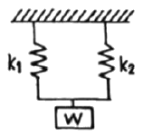
- K=k1+k2
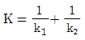
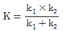
- K=k1×k2
(정답률: 45%)
53. 평벨트 전동에서 유효장력이란 무엇인가?
- 벨트 긴장측 장력과 이완측 장력과의 차를 말한다.
- 벨트 긴장측 장력과 이완측 장력과의 비를 말한다.
- 벨트 긴장측 장력과 이완측 장력의 평균값을 말한다.
- 벨트 긴장측 장력과 이완측 장력의 합을 말한다.
(정답률: 42%)
54. 폭(b)×높이(h) = 10mm×8mm인 묻힘 키가 전동축에 고정되어 0.25kN·m의 토크를 전달할 때, 축 지름은 약 몇 mm 이상이어야 하는가? (단, 키의 허용 전단응력은 36MPa이며, 키의 길이는 47mm이다.)
- 29.6
- 35.3
- 41.7
- 50.2
(정답률: 27%)
55. 10kN의 물체를 수직방향으로 들어올리기 위해서 아이볼트를 사용하려 할 때, 아이볼트나사부의 최소 골지름은 약 몇 mm 인가? (단, 볼트의 허용인장응력은 50MPa이다.)
- 14
- 16
- 20
- 22
(정답률: 25%)
56. 래크 공구로 모듈 5, 압력각은 20°, 잇수는 15인 인벌류트 치형의 전위 기어를 가공하려 한다. 이때 언더컷을 방지하기 위하여 필요한 이론 전위량은 약 몇 mm인가?
- 0.124
- 0.252
- 0.510
- 0.613
(정답률: 13%)
57. 공업제품에 대한 표준화를 시행 시 여러 장점이 있다. 다음 중 공업제품 표준화와 관련한 장점으로 거리가 먼 것은?
- 부품의 호환성이 유지된다.
- 능률적인 부품생산을 할 수 있다.
- 부품의 품질향상이 용이하다.
- 표준화 규격 제정 시에 소요되는 시간과 비용이 적다.
(정답률: 50%)
58. 드럼 지름이 300mm인 밴드 브레이크에서 1kN·m의 토크를 제동하려고 한다. 이 때 필요한 제동력은 약 몇 N 인가?
- 667
- 5500
- 6667
- 795
(정답률: 53%)
59. 두 축의 중심선이 어느 각도로 교차되고 그 사이의 각도가 운전 중 다소 변하여도자유로이 운동을 전달할 수 있는 축 이음은?
- 플랜지 이음
- 셀러 이음
- 올덤 이음
- 유니버설 이음
(정답률: 48%)
60. 두께 10mm의 강판에 지름 24mm의 리벳을 사용하여 1줄 겹치기 이음할 때 피치는 약 몇 mm 인가?(단, 리벳에서 발생하는 전단응력은 35.3MPa이고, 강판에 발생하는 인장응력은 42.2MPa이다.)
- 43
- 62
- 55
- 74
(정답률: 23%)
4과목: 유압기기 및 건설기계일반
61. 그림과 같은 유압회로의 명칭으로 가장 적절한 것은?
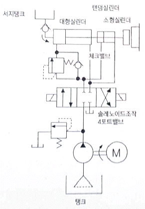
- 증강 회로
- 브레이크 회로
- 정토크 구동 회로
- 정출력 구동 회로
(정답률: 25%)
62. 본체와의 결합 각도가 37° 및 45°의 2종류가 있는 파이프 이음 방식은?
- 용접 이음
- 세이프 이음
- 플레어 이음
- 플랜지 이음
(정답률: 32%)
63. 유압 시스템의 오일 토출량이 매분 49 이고, 실린더 튜브의 내경이 10cm인 유압 실린더의 추력이 2.5kN 이라면, 이 유압 실린더의 속도는 몇 cm/sec 인가?
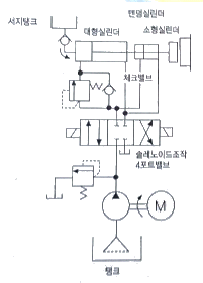
- 7.8
- 8.2
- 9.6
- 10.4
(정답률: 20%)
64. 유압기계에서 작업장치로 유압 실린더의 압력을 천천히 빼어, 기계 손상의 원인이 되는 회로의 충격을 작게 하는 것을 무엇이라 하는가?
- 컷 오프
- 오일 미스트
- 디컴프레션
- 유압 드레인
(정답률: 48%)
65. 릴리프 밸브에 관한 일반적인 특성으로 틀린 것은?
- 회로의 파괴를 방지한다.
- 압력을 일정하게 유지한다.
- 회로 내의 압력을 설정 값 이하로 제한한다.
- 공기흐름의 방향을 변환시켜 액추에이터를 제어하기 위해 사용한다.
(정답률: 34%)
66. 기름의 압축률이 6×10-5m2일 때 압력을 0에서 200N/m2까지 압축하면 체적은 몇 % 감소하는가?
- 1.2
- 1.6
- 2.2
- 2.6
(정답률: 32%)
67. 기어펌프의 폐입 현상에 대한 설명으로 옳지 않은 것은?
- 폐입 현상의 방지책으로 토출홈을 만들어 준다.
- 오일은 폐입 부분에서 압축시에는 고압이, 팽창 시에는 진공이 형성된다.
- 폐입으로 인하여 생기는 용적의 변화는 진동과 소음 발생의 원인이 된다.
- 폐입 현상은 기어 펌프의 기어물림율과 관계가 없다.
(정답률: 34%)
68. 그림과 같은 유체 조정기기의 유압기호로서 옳은 것은?
- 가열·냉각온도 조절기
- 공기압 조정 유닛
- 유량계측 검류기
- 기름분무 분리기
(정답률: 24%)
69. 다음 베인펌프에 대한 설명으로 가장 거리가 먼 것은?
- 토출 압력의 맥동이 적다.
- 베인의 마모에 의한 압력 저하가 거의 없다.
- 비교적 고장이 많으며 작동유의 점도에 제한이 없다.
- 펌프 출력에 비해 형상 치수가 작다.
(정답률: 56%)
70. 유압장치 또는 회로 내에 얇은 금속판을 장치하여 압력이 높아지면 얇은 판이 파괴되고, 오일을 탱크로 흐르게 하여 압력을 감소시키는 기기는?
- 압력 스위치
- 유체(유압) 퓨즈
- 감압 퓨즈
- 전기 퓨즈
(정답률: 24%)
71. 로더의 규격표시 방법으로 옳은 것은?
- 자체 중량(kgf)
- 기관 최대 출력(kW)
- 로더의 전체 길이(m)
- 표준 버킷의 산적용량(m3)
(정답률: 50%)
72. 다음 중 조 크러셔의 특징에 관한 설명으로 틀린 것은?
- 고정된 수동판과 요동하는 구동판을 마주보게 한 것이다.
- 싱글 토글형과 더블 토글형이 있다.
- 파쇄용량이 파쇄비율에 비해 작아 3차 파쇄에 적합하다.
- 투입구가 몸체에 비하여 크다.
(정답률: 57%)
73. 토사도로의 보수, 정지 및 노면 마무리 작업, 제설 등을 작업하는 데 가장 적합한 것은?
- 불도저
- 스크레이퍼
- 모터그레이더
- 덤프트럭
(정답률: 45%)
74. 블레이드의 폭 1.5m, 높이가 0.8m인 불도저의 블레이드 용량(m3)은 얼마인가? (단, 보통 흙을 평지에서 밀어내는 경우로 한정한다.)
- 0.96
- 1.20
- 1.54
- 1.80
(정답률: 34%)
75. 공기압축기의 규격을 표시하는 단위로 옳은 것은?
- m3
- m3/min
- m
- m/min
(정답률: 62%)
76. 백호를 주행 장치에 따라 구분할 때 고무바퀴식과 비교하여 무한궤도식의 특징을 설명한 것으로 틀린 것은?
- 견인력이 크다.
- 이동거리가 짧은 협소한 장소에서의 작업에 적합하다.
- 주행속도가 빠른 편이다.
- 습지나 늪지에서도 원활하게 작업이 가능하다.
(정답률: 39%)
77. 플랜트 기계설비용 배관공사 시 신축 곡관이라고도 하며 배관을 이용하여 사용 중 온도 변화에 의한 신축을 흡수하는 방식으로 곡률 반경을 관경의 6배 이상으로 하여 옥외 배관에 많이 사용하는 방법은?
- 스위블 이음
- 루프형 신축이음
- 볼 조인트 이음
- 익스팬션 조인트 이음
(정답률: 19%)
78. 공기압축기를 작동 방식과 이동방식에 따라 분류할 때 작동 방식에 따른 분류에 해당하지 않는 것은?
- 왕복형 압축기
- 트럭 탑재형 압축기
- 베인형 압축기
- 스크루형 압축기
(정답률: 42%)
79. 기중기에서 사용하는 작업장치 중 토사를 차량에 적재하거나, 선박 또는 화차에서의 토사 굴착, 우물 및 준설공사 등을 할 때 수직굴토작업이나 오물 제거 등에 사용하는 장치는?
- 크램셸(clam shell)
- 블레이드(blade)
- 어스 드릴(earth drill)
- 스캐리 화이어(scarifier)
(정답률: 30%)
80. 다음 중 스크레이퍼의 작업장치에 해당하지 않는 것은?
- 이젝터(ejector)
- 볼(bowl)
- 에이프럭(apron)
- 버킷(bucket)
(정답률: 29%)